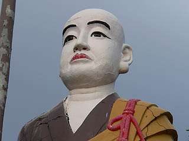

姥子山の立弘法/愛知県名古屋市
名古屋市緑区の姥子山。
山といっても実際は団地や比較的新しい住宅が並ぶニュータウンで、近年道路の拡張工事が行われたりしてかなり様変わりした模様。
そんな道路の傍に大きな弘法大師像が。
大きさとしては台座込みで４メートル位。像高は３メートルといったところだろうか。
ハイ、一目瞭然ですね。
浅野祥雲センセの作品でしょう。多分。
昭和７年に建立された厄除大師である。

系列としては尾張旭市にある厄除弘法にそっくり。
ちなみに尾張旭の厄除弘法は浅野師の銘が刻まれている数少ない浅野祥雲マル確作品だ。

ちなみに尾張旭の厄除弘法は昭和6年の建立。さらに個人的に浅野作品と踏んでいる春日井駅前弘法はここの立弘法と同じ昭和7年に建てられている。
もしこの三体がすべて浅野祥雲師の作であれば（というか私は三体とも浅野作品だと確信してるわけですが）、2年で三体の大弘法を作ったことになる。
熱海城の鯱を除いて浅野作品においてこれだけ大きな作品は他にはあまりない。この昭和6〜7年という年は浅野師のコンクリ作家の活動歴としては初期だがかなり充実した時期だということが伺える。
しかも昭和初期といえば全国にコンクリ大仏が姿を現し始めた頃、愛知県下でも聚楽園大仏や浄福寺大仏が誕生した頃。
ひょっとしたら浅野師の中でも大仏ブームが来ていたのかもしれない。
この大師サマは彩色されていないので最先端のコンピューターグラフィックを使用して色をつけてみました。
→
ホラ、尾張旭の立弘法サマにそっくりでしょ。
大師サマの左には不動明王像。
こちらもファイアーパターンが浅野作品によくあるパターン…のような気がします。
不動サマのさらに左には崩れちゃって判別不明の座像がある。
顔とか石膏で補修してあるが…チト怖いっす。
一体何の像なのだろう、記憶の糸をたぐってみると…
五色園にある縁結び弁才天を思い出した。
着物の形状は違うが頭の上の宝冠らしきもの、真ん中別けの髪型、首飾り、膝の上の机、マウスをクリックしてそうな手付き、左右は違えど膝下から垂れた衣…と、共通点が多い。
ので、浅野師による弁天サマなのではなかろうか？自信ないけど。
ここの立弘法、台座にさる夫婦の銀婚記念と記されている。
銀婚記念に立弘法という発想自体が素敵すぎるぞ。
さて、もうひとつ気になったコンクリ像。
この立弘法の近くにあるお寺の境内で見かけた。右手に鈴、左手に杖を持った女性のお遍路さんのようだ。
まさかコレは浅野作品じゃないよなあ〜、とは思いつつも足元を立弘法と比べてみると…
伽半の筋の形状とかワラジが台座と一体化しているあたりが凄く似ている、ように思えてならんのですが、やっぱ浅野作品なのだろか？
2007.10.
珍寺大道場 HOME